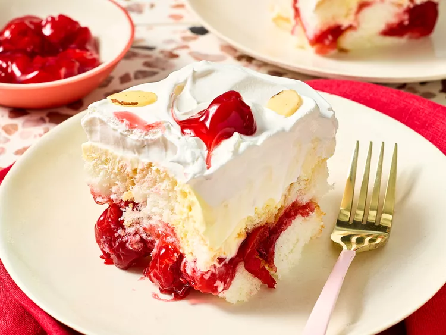
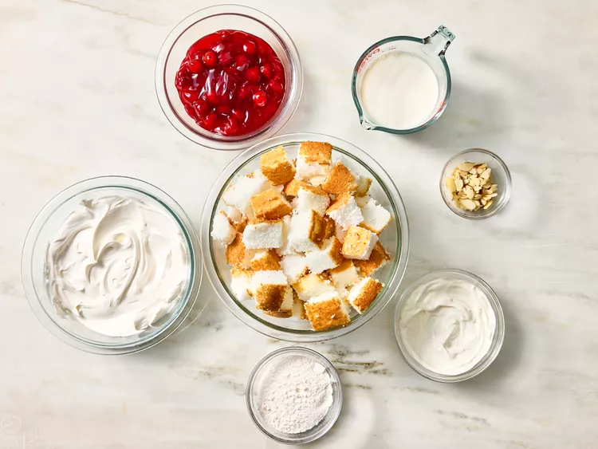
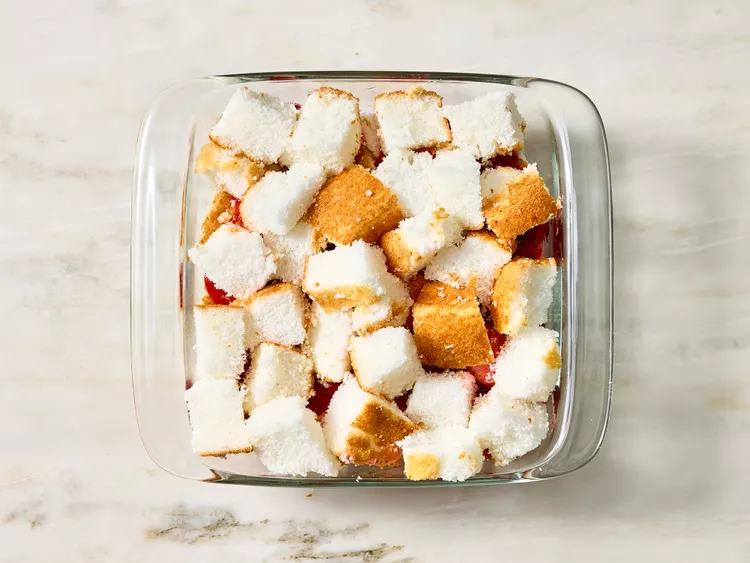
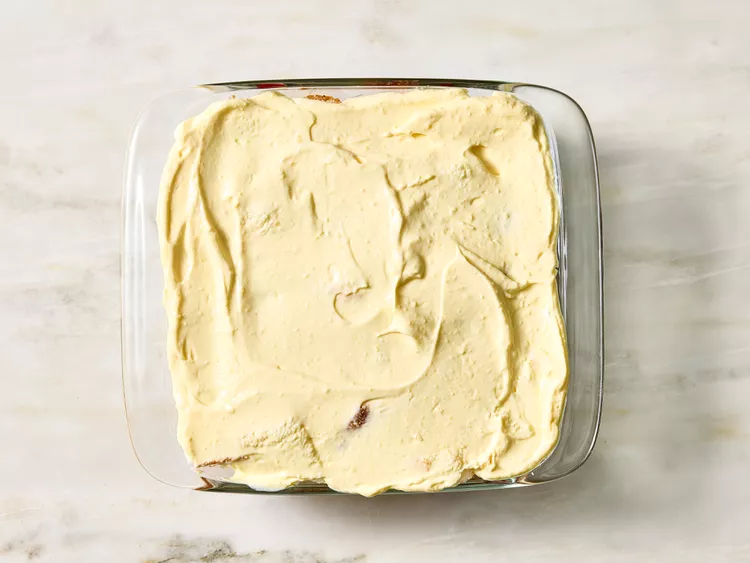

4.6 (167)
138 REVIEWS 22 PHOTOS
I think this meatloaf recipe is close to my grandmother's meatloaf
in flavor and texture. "Nanaw" Rowan made the most delicious
meatloaf in the state. When she passed away, she didn't leave me her
recipe, but she left me the desire to recreate it, and I think this
is it! Don't let the number of ingredients discourage you — it's
part of the magic of creating a masterpiece.
Submitted byLeigh Ann Rowan Kiraly
Updated on July 17, 2024

4.9(34) 34 Review s1 Photo
This heaven on earth cake is an easy summer no-bake dessert that can
be made up to 2 days ahead. Airy angel food cake cubes are layered
with cherry pie filling and rich vanilla pudding, then topped with
swirls of whipped topping and more cherry filling.
By Diana Moutsopoulosth Updated on June 12, 2025
Tested by Amanda Holstein
Prep Time: Chill Time: Total Time:
15 mins 8 hrs 8hrs 15 mins
Servings:
8



By Brooke Caison PUBLISHED:APR 16, 2025
Approved by the Delish Test Kitchen
4.1 Rating

PHOTO: RYAN LIEBE; FOOD STYLING: BROOKE CAISON
YIELDS:
Prep Time:
TOTAL TIME:
10 SERVINGS
10 mins
1 HR 30 MINS
JUMP TO
RECIPE
SAVE
PRINT
Chicken and broccoli casserole is a meal that most people at Team Delish grew up eating, and this recipe is guaranteed to make you feel like a kid again. This creamy, cheesy, Ritz cracker-topped casserole is packed with chicken, rice, and freshly blanched broccoli with the quintessential cream of mushroom soup. This is my ideal Sunday dinner, and it's perfect for when you have a few extra mouths to feed.
Preheat the oven to 375° and grease a 13" x 9" pan with butter.
Slice the chicken breast into cutlets: This is done the same way
you would butterfly a chicken breast, but instead of leaving the
two halves connected, finish cutting until the two halves are
separated. Season all over with seasoning salt. Heat a large
skillet over medium heat. Pour in some oil and swirl to coat the
pan. Cook the chicken for about 7 minutes per side or until light
golden brown and cooked through. Transfer to a plate.

PHOTO: COREY FLORIN
Melt 2 Tbsp. butter in the same pan. Once the butter is melted, add
the onion and 1/2 tsp. salt and cook, stirring occasionally, until
the onion begins to soften, which should take about 5 minutes. Add
the garlic and cook 1 minute more, or until garlic is fragrant. Add
the rice and stir to evenly combine. Lightly toast the rice, 2 to 3
minutes. Add the broth and scrape any browned bits from the bottom
of the skillet. Stir in the soup until smooth and combined.
Transfer everything to the prepared pan. Cover the pan with foil
and bake, uncovering and stirring halfway through, until the rice
is fully cooked through, 35 to 40 minutes.


PHOTO: COREY FLORIN
Meanwhile, fill a small saucepan with water and bring to a boil
over high heat. Place ice cubes in a medium bowl and fill with
cold water. Add the broccoli to the boiling water and cook until
bright green, 2 to 3 minutes.

PHOTO: COREY FLORIN
Transfer the broccoli to the ice water to stop cooking. Remove the
broccoli from the ice water and season with 1/2 tsp. salt.

PHOTO: COREY FLORIN
Use forks or your hands to shred chicken into bite-sized pieces.

PHOTO: COREY FLORIN
In a medium bowl, melt the remaining 2 Tbsp. in the microwave. Add
1/2 cup cheese, crackers, garlic powder, and pepper. Toss with a
fork to combine.

PHOTO: COREY FLORIN
Uncover the pan and stir in the shredded chicken, broccoli, and
remaining 1 cup cheese.

PHOTO: COREY FLORIN
Top with the cracker topping and bake for another 15 minutes, or
until broccoli is tender and topping is slightly browned. Let cool
slightly to set before serving.

PHOTO: COREY FLORIN
The full list of ingredients and instructions can be found in
the recipe below.
Store leftovers in an airtight container up to 4 days, or wrap in
individual portions and freeze up to 3 months.

PHOTO: RYAN LIEBE; FOOD STYLING: BROOKE CAISON

PHOTO: RYAN LIEBE; FOOD STYLING: BROOKE CAISON